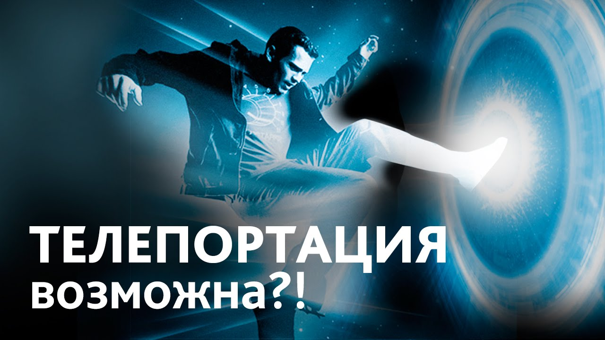

Программист,или как не легко им быть.
Теория всего непонятного

Телепортация
Телепорта́ция — перемещение при котором траектория объекта не может быть описана математически непрерывной функцией времени. Наблюдается квантовая телепортация, но также были описаны несколько других видов телепортации.

Путишествия во времени.
Путешествия во времени — предполагаемое перемещение человека или каких-либо объектов из настоящего в прошлое или будущее, в частности, с помощью технического устройства, называемого «машиной времени».
 Prev
PrevNext